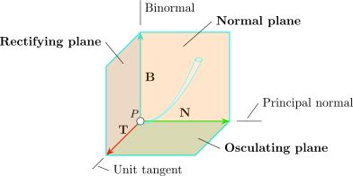

4.14 The Normal and Binormal Vectors
The principal unit normal vector \(\textbf {N}(t)\) is defined by \[\textbf {N}(t) = \frac {\textbf {T}'(t)}{\left |\textbf {T} '(t)\right | }\]
\(\textbf {T}(t) \) is a unit tangent vector at a point where \(K(t) = 0\). The vector \(\textbf {B}(t) = \textbf {T}(t) \times \textbf {N}(t)\) is called the Binormal vector. It is perpendicular to both \(\textbf {T}\) and \(\textbf {N}\) and is a unit vector.
Find the unit normal and binormal vectors for the circular helix \[\overline {r}(t) = \cos t \textbf {i} + \sin t \textbf {j} + t\textbf {k}\]
Solution. \[\overline {r}'(t) = -\sin t \textbf {i} + \cos t \textbf {j} + \textbf {k}\hspace {0.3cm} , \hspace {0.3cm} \left |\overline {r}'(t)\right | = \sqrt {2}\]
\[\textbf {T}(t) = \frac {\overline {r}'(t)}{\left |\overline {r}'(t)\right | }=\frac {1}{\sqrt {2}}\Big (-\sin t \textbf {i} + \cos t \textbf {j} + \textbf {k}\Big )\]
\[\textbf {T}'(t) = \frac {1}{\sqrt {2}}\Big (-\cos t \textbf {i} - \sin t \textbf {j}\Big )\hspace {0.3cm}, \hspace {0.3cm} \left |\textbf {T}'(t)\right |= \frac {1}{\sqrt {2}}\]
\[\implies \hspace {0.5cm} \textbf {N}(t) = \frac {1/\sqrt {2}(-\cos t \textbf {i} - \sin t \textbf {j})}{1/\sqrt {2}}\]
\[\textbf {B}(t) = \textbf {T}(t) \times \textbf {N}(t) = \frac {1}{\sqrt {2}}\big \langle \sin t, - \cos t , 1\big \rangle \]
The plane determined by the normal and binormal vectors \(\textbf {N}\) and \(\textbf {B}\) at a point \(P\) on a curve \(C\) is called the normal plane of \(C\) at \(P\). It consists of all lines that are orthogonal to the tangent vector the vectors \(\textbf {T}\) and \(\textbf {N}\) is called the osculating plane of \(C\) at \(P\). It has normal vector \(\textbf {B} = \textbf {T} \times \textbf {N}\).
Find the equations of the normal and osculating planes of \(\overline {r}(t) = \cos t\textbf {i} + \sin t \textbf {j} + \textbf {k}\) at \(P\Big (0,1,\dfrac {\pi }{2}\Big )\).
The normal plane at \(P\) has normal vector \(\overline {r}'\Big (\dfrac {\pi }{2}\Big ) = -\sin \dfrac {\pi }{2}\textbf {i} + \cos \dfrac {\pi }{2}\textbf {j} + \textbf {k} = -\textbf {i} + \textbf {k}\).
\[\therefore \hspace {0.5cm}\text {equation}:\hspace {0.3cm} -1(x - 0) + 0 ( y - 1) + 1\Big (z - \dfrac {\pi }{2}\Big ) = 0\]
\[z = x + \frac {\pi }{2}\]
The osculating plane has normal vector \[\textbf {B}(t) = \textbf {T}\times \textbf {N} = \frac {1}{\sqrt {2}}\big \langle \sin t , -\cos t ,1 \big \rangle \]
\[\textbf {B}\Big (\dfrac {\pi }{2}\Big ) = \Big \langle \dfrac {1}{\sqrt {2}}, 0 , \dfrac {1}{\sqrt {2}}\Big \rangle \]
A simpler normal vector is \(\big \langle 1, 0, 1\big \rangle \) so equation is \[1(x - 0) + 0 (y -1) + 1\Big (z - \dfrac {\pi }{2}\Big ) = 0\] \[z= x + \dfrac {\pi }{2}\]
The torsion sometimes called the \(``\) second curvature \(''\) is the rate of change of the curves osculating plane. A curve with curvature \(K(t) \neq 0\) if and only if its torsion \(\tau = 0\) . \(I(t)\) is found from the equation \(\textbf {B}'s = -I(\textbf {N}S) \implies \tau = -\textbf {N}\cdot \textbf {B}'S\). The torsion \(\tau \) is compute using the formula.
\[\tau = \frac {\big (\overline {r}'(t) \times \overline {r}''(t)\big )\cdot \overline {r}'''(t)}{\left |\overline {r}'(t)\times \overline {r}''(t)\right |^2 }\]
Find the torsion \(\tau \) for the curve with the equation \(\hspace {0.2cm} \overline {r}(t) = \big \langle t^2 , -(3t + 1), t^3\big \rangle \) at the point \((1,-4,1)\).
Solution. \[\tau = \frac {\big (\overline {r}'(t) \times \overline {r}''(t)\big )\cdot \overline {r}'''(t)}{\left |\overline {r}'(t)\times \overline {r}''(t)\right |^2 }\]
\(\overline {r}' = \big \langle 2t, -3, 3t^2\big \rangle \)
\(\overline {r}'' = \big \langle 2, 0, 6t\big \rangle \)
\(\overline {r}''' = \big \langle 0, 0, 6\big \rangle \)
\[\overline {r}' \times \overline {r}'' = -18\textbf {i} - 6\textbf {j} + 6\textbf {k} = 6\big (-3\textbf {i} - \textbf {j} + \textbf {k}\big )\]
\[\implies \hspace {1cm} \left |\overline {r}' \times \overline {r}''\right | = \Big (6\sqrt {11}\Big )^2 = 36(11)\]
\[\Big (\overline {r}' \times \overline {r}''\Big )\cdot \overline {r}''' = 6\big (-3\textbf {i} - \textbf {j} + \textbf {k}\big )\cdot 6\textbf {k} = 36\]
\[\tau = \frac {36}{36(11)} = \frac {1}{11}\]
The three planes determined by \(\textbf {T}, \textbf {N}\) and \(\textbf {B}\) are shown below:

The curvature \(\left |\dfrac {d T}{dS}\right |\) can be thought of as the rate at which the normal plane turns as \(P\) moves along the
curve. Similarly the torsion \(\tau = \left |\dfrac {d\textbf {B}}{dS}\right |\), is the rate at which the osculating plane lifts as \(P\) moves along the
curve.
Another formula for finding torsion is \(\displaystyle {\tau = \frac {\begin {vmatrix} x' & y' & z'\\ x'' & y'' & z''\\ x''' & y''' & z'''\\ \end {vmatrix} }{\left |\overline {r}' \times \overline {r}''\right |^2 }}\)
Find the torsion of the helix \(\hspace {0.2cm} \overline {r}(t) = \cos t \textbf {i} + \sin t \textbf {j} + \textbf {k}\).
Solution.
\(\overline {r}'(t) = -\sin t \textbf {i} + \cos t \textbf {j} + \textbf {k}\)
\(\overline {r}''(t) = -\cos t \textbf {i} - \sin t \textbf {j}\)
\(\overline {r}'''(t) = \sin t \textbf {i} - \cos t \textbf {j}\)
\[\overline {r}' \times \overline {r}'' = \begin {vmatrix} \textbf {i} & \textbf {j} & \textbf {k}\\ -\sin t & \cos t & 1 \\ -\cos t & -\sin t & 0\\ \end {vmatrix} = \sin t\textbf {i} -\cos t\textbf {k} + \textbf {k}\]
\[\implies \hspace {0.5cm} \left |\overline {r}' \times \overline {r}''\right | = \sqrt {2}\]
\begin {align*} \tau & = \frac {\begin {vmatrix} -\sin t & \cos t & 1\\ -\cos t & -\sin t & 0\\ \sin t & -\cos t & 0 \\ \end {vmatrix} }{\big (\sqrt {2}\big )^2} =\frac {1}{2}\big ( \sin t (\sin t) + \cos t (\cos t)\big ) \neq 0\\\\ & = \frac {1}{2}\big (\sin ^2t + \cos ^2t\big ) = \frac {1}{2} \end {align*}
\[\therefore \hspace {0.6cm} \tau = \frac {1}{2}\]
Questions on this section
Stuck on something here? Ask below and it stays attached to this topic.